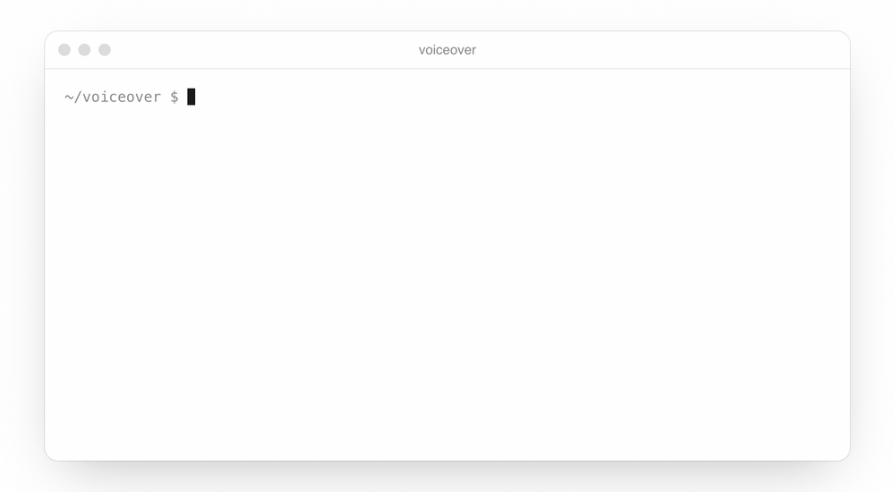
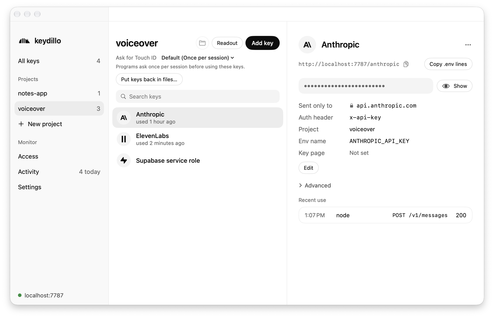

Get set up in seconds and forget about it.
brew install --cask ephibbs/keydillo/keydillo

.env. Keys become placeholders.kd.
Put a project's real keys back in its .env with Touch ID, and Secure it again in one click.
Each API key is sent only to its own host. A prompt injection can't send it anywhere else.
Approve each new site, and as often as you choose.
The Access page shows what's approved right now. End any of it in one click.
If real keys are left in a project's .env, keydillo tells you.
Claude puts kd in front for you. Cursor, Codex and others work with kd too.
Import them once. Your keys become placeholders, and the real values live in keydillo, one place for every project.
No account, no cloud, no telemetry. MIT licensed.
.env only holds keydillo:<name> placeholders..env leaks nothingOnly the placeholder is in the file..env files, shell and git history. Rotate those keys.More in the security model and limits.
brew install --cask ephibbs/keydillo/keydilloThen open keydillo and choose Connect.
/plugin marketplace add Ephibbs/keydillo
/plugin install keydillo@keydilloThen ask Claude to set up keydillo. If the app isn't installed yet, Claude gives you the brew command.npx skills add Ephibbs/keydilloRequires macOS 15 or later. Signed and notarized by Apple.
Not your API keys. It only sees a placeholder, and the real key is added on your Mac after the request leaves. Keys your app uses itself, like a database password, are handed to the app when it starts. They're never in a file Claude reads, but a command that prints the app's environment could show them. We're working on closing this: database passwords first, then signing and encryption keys for apps that support it, so they never reach the app either.
They put the real key into your app's environment, where an agent can read it. With keydillo an API key never reaches the app or the agent. It's added on your Mac as the request goes out.
kd opens it in the background. Without keydillo, requests that need a key fail, because the placeholder isn't a real key.
Commands you run with kd in front: curl, Python, Node, Bun and Deno are tested. Go and Rust programs, gRPC and Docker don't work under kd yet; they can call the local address instead.
Once per session by default. You can pick every time instead, or let a project's keys work after one Touch ID.
Yes, in the app, after Touch ID.
Quit it from the menu bar to stop all key use at once. To stop using keydillo, choose "Put my real keys back" and confirm with Touch ID. It restores your .env files, for one project or all of them.
Not yet. It's built on the Mac Keychain.